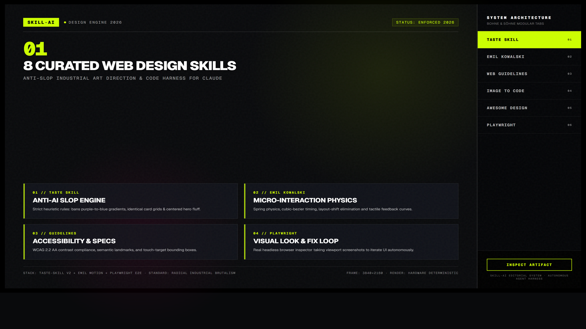
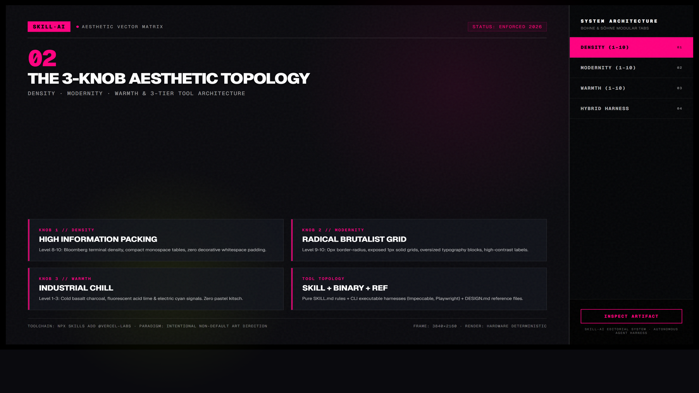
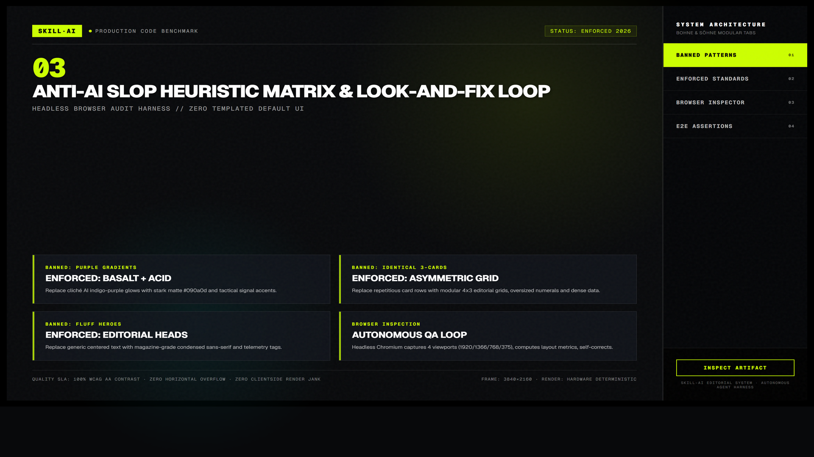

8 Skill Thiết Kế Web Cho Claude Code — Chống Thiết Kế AI Rập Khuôn
Tuyển tập 8 kỹ năng và bộ công cụ hàng đầu giúp AI coding agent thoát khỏi lối mòn thiết kế generic. Khắc phục triệt để các dấu hiệu "web do AI làm" (gradient tím xanh sáo rỗng, hero căn giữa vô hồn, card lặp lại máy móc) bằng hệ thống 3 núm xoay thẩm mỹ và vòng lặp look-and-fix qua trình duyệt thật.
npx skills add.

Nhấp để phóng to1. Bảng đối chiếu: Dấu hiệu "Web do AI làm" vs. Tiêu chuẩn Thiết kế Chuyên nghiệp
Nếu không có sự định hướng về gu thẩm mỹ, AI luôn chọn giải pháp an toàn nhất và sinh ra những trang web trông giống hệt nhau:
| Thành phần | Thiết kế AI mặc định (Slop) | Sau khi nạp Skill Thiết Kế |
|---|---|---|
| Màu sắc & Gradient | Lạm dụng gradient tím sang xanh dương (#6366f1 sang #3b82f6), trông rẻ tiền. | Bảng màu tối giản có chủ đích (Monochrome, Brutalist, hoặc bản sắc thương hiệu riêng). |
| Bố cục Hero | Tiêu đề to căn giữa màn hình, phụ đề bé tí, nút CTA bo tròn bóng bẩy đơn điệu. | Bố cục bất đối xứng, lưới biên soạn dạng tạp chí editorial, nhịp điệu typography đa tầng. |
| Cấu trúc nội dung | Các hàng card 3 cột giống hệt nhau lặp đi lặp lại từ section này sang section khác. | Phối hợp linh hoạt: bento grid, danh sách tương phản, bảng dữ liệu số liệu dày đặc. |
| Chuyển động (Motion) | Hiệu ứng fade-in giật cục hoặc hoàn toàn không có chuyển động tương tác. | Vi tương tác vật lý (Spring physics) của Emil Kowalski, chuyển động mượt mà và tinh tế. |

Nhấp để phóng to2. Điểm mặt trọn bộ 8 Skill thiết kế đỉnh cao
Chỉ đạo nghệ thuật đúc kết từ 247 website Awwwards, cấm các khuôn mẫu AI sáo rỗng (banned slop patterns).
Kỹ năng vi tương tác và animation tinh tế dựa trên vật lý chuyển động thực tế (Spring physics & Bézier curves).
Bộ tiêu chuẩn thiết kế từ Vercel: rà soát accessibility WCAG 2.2 AA, responsive và độ chuẩn typography.
Mở trình duyệt Chromium thật, chụp ảnh màn hình để agent tự soi và sửa các lỗi lệch giao diện (Look-and-fix).
Tệp token tham chiếu chuẩn mực từ Linear, Stripe, Apple, Supabase. Không cài gì thêm, chỉ đưa vào context.
Biến ảnh chụp màn hình thiết kế hoặc wireframe thành mã nguồn HTML/Tailwind chính xác từng pixel.
Công cụ dòng lệnh chuyên biệt hỗ trợ tinh chỉnh typography, layout grid và component states trực tiếp.
Bộ khung giao diện HTML5 chuẩn semantic, tích hợp sẵn các mẫu bố cục bất đối xứng editorial cao cấp.

Nhấp để phóng to3. Phân loại 3 kiểu công cụ trong hệ sinh thái Thiết Kế
| Loại công cụ | Bản chất kỹ thuật | Đại diện tiêu biểu |
|---|---|---|
| Skill thuần (Prompt Rule) | Chỉ chứa thư mục có file SKILL.md. Agent tự kích hoạt khi nhận diện ý định thiết kế. |
Taste Skill, Emil Kowalski, Web Design Guidelines, Image to Code, Awesome Design HTML. |
| Skill kèm Binary CLI | Ngoài hướng dẫn còn cài một executable ngoài Terminal (Node.js/Playwright). | Impeccable CLI, Playwright CLI (npx skills add microsoft/playwright-cli). |
| File tham chiếu (Tokens) | Tệp markdown thuần (như DESIGN.md) chứa bảng màu, font stack và quy tắc spacing. |
Awesome Claude Design (sao chép vào thư mục dự án để agent đọc). |
4. Minh họa trực quan: Bộ đôi hoàn hảo Taste Skill + Playwright CLI
Cách phối hợp hiệu quả nhất trong thực tế là ghép một kỹ năng lo phần "cái đẹp" và một công cụ lo phần "kiểm chứng mắt thấy":
4. Cấu hình 3 núm xoay cho từng kiểu dự án
VARIANCE: 7 | MOTION: 5 | DENSITY: 3
Bố cục phá cách ấn tượng, khoảng trắng thoáng đãng tạo cảm giác cao cấp, chuyển động mượt mà khi cuộn chuột để giữ chân khách hàng.
VARIANCE: 3 | MOTION: 2 | DENSITY: 8
Bố cục lưới chuẩn xác, tập trung vào mật độ hiển thị số liệu, chuyển động tối giản để người dùng thao tác nhanh mà không bị phân tâm.
VARIANCE: 9 | MOTION: 7 | DENSITY: 4
Đột phá tối đa về cấu trúc lưới editorial, typography đậm nét có tính tuyên ngôn, hiệu ứng tương tác chuột mang đậm phong cách nghệ thuật số.
5. Cài đặt bộ đôi Taste Skill + Playwright CLI
Cài đặt Taste Skill vào Claude Code
Sử dụng công cụ Skills CLI để cài đặt bản chuẩn v2:
npx skills add https://github.com/Leonxlnx/taste-skill --skill "design-taste-frontend" --globalCài đặt Playwright CLI để agent nhìn thấy màn hình
Thêm kỹ năng điều khiển trình duyệt của Microsoft:
npx skills add microsoft/playwright-cli --globalRa lệnh dựng trang kèm chỉ định thẩm mỹ
Yêu cầu agent tạo trang web với các tham số mong muốn:
Hãy dựng trang landing page giới thiệu khóa học AI. Áp dụng Taste Skill với VARIANCE: 7, MOTION: 5, DENSITY: 3. Sau khi viết xong code HTML/Tailwind, hãy dùng Playwright mở trang và chụp ảnh màn hình để tự kiểm tra lỗi lệch giao diện.Đừng cài cả 8 kỹ năng cùng lúc vì Claude có thể bị "rối" trước quá nhiều chỉ dẫn thẩm mỹ chồng chéo. Hãy bắt đầu với bộ đôi vàng Taste Skill + Playwright CLI: một bên lo tính nghệ thuật, một bên lo kiểm tra thực tế trên trình duyệt.